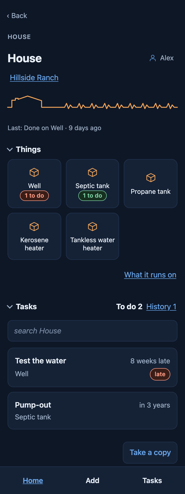
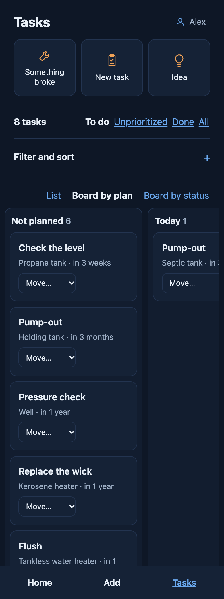
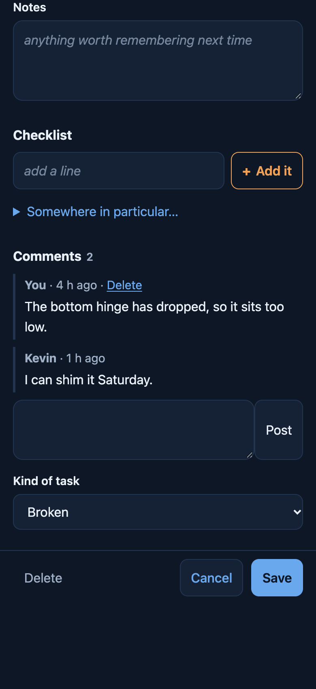
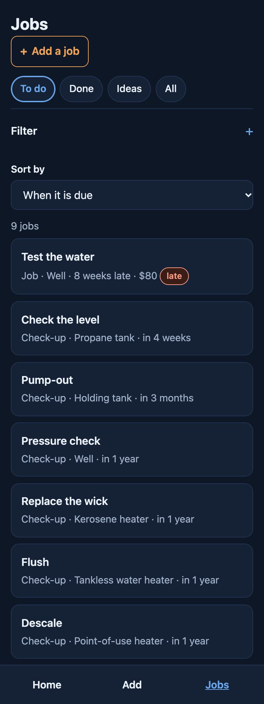

Dwel
DwelWhat it looks like.
A walk through the whole thing, from an empty screen to a place that tells you what it needs. Nothing here is a mock-up — every screen is the app.
Start by pointing at it
A house, a ranch, a farm, a cabin, a tiny house, a boat, or a patch of land with nothing on it yet. One tap and you are on Home — no form to fill in first.
What you pick changes what you get asked later. A boat is never asked about a basement; a pasture is asked about power and nothing else.

Then what needs doing
Nobody sets a place up mid-leak. Say what kind — maintenance, something broke, an idea, a project — then what needs doing and what it is for: the dryer, the cats, the pool filter. Anything not on the log yet is added right there, with where it is, and something the app knows comes with its check-ups.
Each kind asks only what fits it. Maintenance can repeat; something broken asks how bad, and stays at the top until it is fixed; an idea waits with no date; a project holds the tasks that get it done.

Or set it up first, as much or as little as you like
Setting up is there for anybody who wants it, and nobody has to. No wizard: every tile is a door, and each one tells you what it already has. Take me in is there from the first second.
“Not set” is a state, not a failure. If you want to say nothing about the weather and go straight to the broken dryer, do that.

Where it is, and what that costs you
The climate is guessed from your region and corrected by you. Where it sits is a separate question, because two houses at the same height in the same county need different work: a valley floor frosts when the hill above it does not, trees mean gutters, salt air eats metal.
Elevation is a number rather than a tick called “high altitude”, because nobody knows whether they are it. Below about 2,000 ft it changes nothing.

What it actually runs on
Well or city water. Septic or sewer. Wood and propane and kerosene, because one house often runs all three. Each answer brings its own check-ups with it.
Not sure yet is a real answer and stays one. Nothing you have not answered will ever chase you about it.

Who is here, and what lives with you
How many people, whether there are children among them, anyone you want on the log, and the animals. Feed runs out and papers expire exactly like anything else.
People affect wear. With a full house the app says when the book figure may not last, and the first time you replace the thing, your own interval is the one it shows. It never quietly changes one.

Three fridges is an ordinary number of fridges
Counts rather than ticks, because one row for all three would lose two of them. Each gets its own check-ups, and every interval says where it came from — the manual, the code, or our estimate.
Nothing needs a name. Leave it blank and it is called what it is; a second shed becomes Shed 2.

The barn, the coop, the wrap-around deck
A place can hold as many buildings as it has. Attached still counts as its own building — a deck gets sealed and a greenhouse gets glazing, and neither belongs on the house’s list.
One of them can belong to somebody else. A tiny house parked on your land is marked as theirs, along with what it is hooked up to on your side.

Then it has a pulse
The line across the top is drawn from your own place — a shape for each building, and a beat as tall as how soon it needs you. Under it, what the place holds: buildings, animals, vehicles, things. Then anything broken, then what is coming up in the next week, month or three.
Two places never draw the same line, and yours changes as the place does. A calm line is a true reading, not a reward.

Every page works the same way
A building shows what is in it — rooms, things, animals — then its tasks. Open the well and it is the well's own tasks and history. Each list folds away when you do not need it.
Add, at the bottom, starts from wherever you are: on the barn it offers a thing in the barn or a task for it; on the animals, an animal or a task for one.

Your own lists, and a board
Filter Tasks the way you think — the barn, what is late, what repeats — and save it as a list. Each list gets a tile on Home.
Any list can be a board: by plan — today, this week, next week, kept apart from when it is due — or by status, from to do to done. Move a card and it moves. Turn a phone sideways and the board is there.

And it is not all in one person’s head
Invite somebody and they get a code to type in. They sign in with their own email, see which place it is for and what it lets them do, and join — as the person already on your list, with what they have already done.
Each invite names what they can do, the whole place or one building, and the day it stops working. A code sent a year ago opens nothing.

Talk it over on the task
Comments sit under the task they are about: what you found, when you can get to it. They say who said them and when.
On a place you share, a bell on Home shows what is new since you last looked: a comment from somebody else, something they reported broken, or a task marked done.

On your home screen, signal or not
Add it to your home screen and it opens like an app. Your lists, your check-ups and everything you have written down are on the phone, so the barn with no bars is still a place you can tick things off. Signed in, what you change is kept on the phone and goes up to your account when the signal comes back.
On an iPhone: Share, then Add to Home Screen. On Android: the ⋮ menu, then Install app. In a browser tab, an iPhone empties what a site has saved after a week of not opening it; on the home screen it keeps it.

For wherever you dwell
Houses, condos, rentals, ranches, farms, tiny houses on wheels and boats — including what lives with you. Free, and yours to take with you.